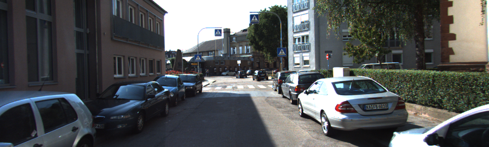
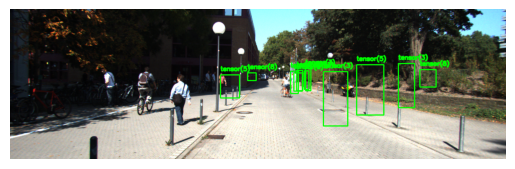

import torch
import torchvision
from torch.utils.data import Dataset, DataLoader
import numpy as np
class WineDataset(Dataset):
def __init__(self):
#data loading
xy = np.loadtxt('Data/wine.csv', delimiter=",", dtype=np.float32, skiprows = 1)
self.xy = xy
self.x = torch.from_numpy(xy[:,1:])
self.y = torch.from_numpy(xy[:,[0]])
self.n_samples = xy.shape[0]
def __getitem__(self, index):
return self.x[index], self.y[index]
def __len__(self):
return self.n_samplesDataset and Dataloaders
Datasets and Dataloaders
dataset = WineDataset()first_data = dataset[0]
first_data(tensor([1.4230e+01, 1.7100e+00, 2.4300e+00, 1.5600e+01, 1.2700e+02, 2.8000e+00,
3.0600e+00, 2.8000e-01, 2.2900e+00, 5.6400e+00, 1.0400e+00, 3.9200e+00,
1.0650e+03]),
tensor([1.]))features, labels = dataset[0]
features, labels(tensor([1.4230e+01, 1.7100e+00, 2.4300e+00, 1.5600e+01, 1.2700e+02, 2.8000e+00,
3.0600e+00, 2.8000e-01, 2.2900e+00, 5.6400e+00, 1.0400e+00, 3.9200e+00,
1.0650e+03]),
tensor([1.]))dataloader = DataLoader(dataset=dataset, batch_size = 4, shuffle = True, num_workers = 2)dataiter = iter(dataloader)next(dataiter)[tensor([[1.2250e+01, 1.7300e+00, 2.1200e+00, 1.9000e+01, 8.0000e+01, 1.6500e+00,
2.0300e+00, 3.7000e-01, 1.6300e+00, 3.4000e+00, 1.0000e+00, 3.1700e+00,
5.1000e+02],
[1.2420e+01, 1.6100e+00, 2.1900e+00, 2.2500e+01, 1.0800e+02, 2.0000e+00,
2.0900e+00, 3.4000e-01, 1.6100e+00, 2.0600e+00, 1.0600e+00, 2.9600e+00,
3.4500e+02],
[1.2370e+01, 1.1300e+00, 2.1600e+00, 1.9000e+01, 8.7000e+01, 3.5000e+00,
3.1000e+00, 1.9000e-01, 1.8700e+00, 4.4500e+00, 1.2200e+00, 2.8700e+00,
4.2000e+02],
[1.3830e+01, 1.6500e+00, 2.6000e+00, 1.7200e+01, 9.4000e+01, 2.4500e+00,
2.9900e+00, 2.2000e-01, 2.2900e+00, 5.6000e+00, 1.2400e+00, 3.3700e+00,
1.2650e+03]]),
tensor([[2.],
[2.],
[2.],
[1.]])]dataiter = iter(dataloader)data = next(dataiter)
features, labels = datafeatures, labels(tensor([[1.3720e+01, 1.4300e+00, 2.5000e+00, 1.6700e+01, 1.0800e+02, 3.4000e+00,
3.6700e+00, 1.9000e-01, 2.0400e+00, 6.8000e+00, 8.9000e-01, 2.8700e+00,
1.2850e+03],
[1.1840e+01, 2.8900e+00, 2.2300e+00, 1.8000e+01, 1.1200e+02, 1.7200e+00,
1.3200e+00, 4.3000e-01, 9.5000e-01, 2.6500e+00, 9.6000e-01, 2.5200e+00,
5.0000e+02],
[1.3860e+01, 1.5100e+00, 2.6700e+00, 2.5000e+01, 8.6000e+01, 2.9500e+00,
2.8600e+00, 2.1000e-01, 1.8700e+00, 3.3800e+00, 1.3600e+00, 3.1600e+00,
4.1000e+02],
[1.4120e+01, 1.4800e+00, 2.3200e+00, 1.6800e+01, 9.5000e+01, 2.2000e+00,
2.4300e+00, 2.6000e-01, 1.5700e+00, 5.0000e+00, 1.1700e+00, 2.8200e+00,
1.2800e+03]]),
tensor([[1.],
[2.],
[2.],
[1.]]))num_epochs = 2
total_samples = len(dataset)
n_iterations = int(np.ceil(total_samples/4))
total_samples, n_iterations(178, 45)for epoch in range(num_epochs):
for i, (inputs, labels) in enumerate(dataloader):
if (i + 1) % 5 == 0:
print(f'epoch {epoch + 1}/{num_epochs}, step {i+1}/{n_iterations}, inputs:{inputs[0][:5]} labels:{labels[0]}')epoch 1/2, step 5/45, inputs:tensor([13.3600, 2.5600, 2.3500, 20.0000, 89.0000]) labels:tensor([3.])
epoch 1/2, step 10/45, inputs:tensor([ 13.2900, 1.9700, 2.6800, 16.8000, 102.0000]) labels:tensor([1.])
epoch 1/2, step 15/45, inputs:tensor([14.1600, 2.5100, 2.4800, 20.0000, 91.0000]) labels:tensor([3.])
epoch 1/2, step 20/45, inputs:tensor([ 13.9400, 1.7300, 2.2700, 17.4000, 108.0000]) labels:tensor([1.])
epoch 1/2, step 25/45, inputs:tensor([12.6000, 1.3400, 1.9000, 18.5000, 88.0000]) labels:tensor([2.])
epoch 1/2, step 30/45, inputs:tensor([ 13.2400, 2.5900, 2.8700, 21.0000, 118.0000]) labels:tensor([1.])
epoch 1/2, step 35/45, inputs:tensor([11.0300, 1.5100, 2.2000, 21.5000, 85.0000]) labels:tensor([2.])
epoch 1/2, step 40/45, inputs:tensor([ 13.4800, 1.8100, 2.4100, 20.5000, 100.0000]) labels:tensor([1.])
epoch 1/2, step 45/45, inputs:tensor([ 12.6400, 1.3600, 2.0200, 16.8000, 100.0000]) labels:tensor([2.])
epoch 2/2, step 5/45, inputs:tensor([14.7500, 1.7300, 2.3900, 11.4000, 91.0000]) labels:tensor([1.])
epoch 2/2, step 10/45, inputs:tensor([12.3700, 1.6300, 2.3000, 24.5000, 88.0000]) labels:tensor([2.])
epoch 2/2, step 15/45, inputs:tensor([ 13.8300, 1.5700, 2.6200, 20.0000, 115.0000]) labels:tensor([1.])
epoch 2/2, step 20/45, inputs:tensor([12.6900, 1.5300, 2.2600, 20.7000, 80.0000]) labels:tensor([2.])
epoch 2/2, step 25/45, inputs:tensor([11.4100, 0.7400, 2.5000, 21.0000, 88.0000]) labels:tensor([2.])
epoch 2/2, step 30/45, inputs:tensor([12.2500, 1.7300, 2.1200, 19.0000, 80.0000]) labels:tensor([2.])
epoch 2/2, step 35/45, inputs:tensor([ 11.5600, 2.0500, 3.2300, 28.5000, 119.0000]) labels:tensor([2.])
epoch 2/2, step 40/45, inputs:tensor([ 14.1000, 2.0200, 2.4000, 18.8000, 103.0000]) labels:tensor([1.])
epoch 2/2, step 45/45, inputs:tensor([ 14.2200, 1.7000, 2.3000, 16.3000, 118.0000]) labels:tensor([1.])Dataset Transform
Types of Transform:
On Images:
CenterCrop, Grayscale, Pad, RandomAffine RandomCrop, RandomHorizontalFlip, RandomRotation Resize, Scale
On Tensors:
LinearTransformation, Normalize, RandomErasing
Conversion:
ToPILImage: from tensor or ndarray
ToTensor: from numpy.ndarray or PIL Image
import torch
import torchvision
from torch.utils.data import Dataset, DataLoader
import numpy as np
class WineDataset(Dataset):
def __init__(self, transform = None):
#data loading
xy = np.loadtxt('Data/wine.csv', delimiter=",", dtype=np.float32, skiprows = 1)
self.xy = xy
self.x = xy[:,1:]
self.y = xy[:,[0]]
self.n_samples = xy.shape[0]
self.transform = transform
def __getitem__(self, index):
sample = self.x[index], self.y[index]
if self.transform:
sample = self.transform(sample)
return sample
def __len__(self):
return self.n_samplesclass ToTensor():
def __call__(self, sample):
inputs, targets = sample
return torch.from_numpy(inputs), torch.from_numpy(targets)
class MulTransform:
def __init__(self, factor):
self.factor = factor
def __call__(self, sample):
inputs, target = sample
inputs *= self.factor
return inputs, targetcomposed = torchvision.transforms.Compose([ToTensor(), MulTransform(2)])dataset = WineDataset(transform = composed)first_data = dataset[0]
first_data(tensor([2.8460e+01, 3.4200e+00, 4.8600e+00, 3.1200e+01, 2.5400e+02, 5.6000e+00,
6.1200e+00, 5.6000e-01, 4.5800e+00, 1.1280e+01, 2.0800e+00, 7.8400e+00,
2.1300e+03]),
tensor([1.]))features, labels = dataset[0]
features, labels(tensor([5.6920e+01, 6.8400e+00, 9.7200e+00, 6.2400e+01, 5.0800e+02, 1.1200e+01,
1.2240e+01, 1.1200e+00, 9.1600e+00, 2.2560e+01, 4.1600e+00, 1.5680e+01,
4.2600e+03]),
tensor([1.]))dataloader = DataLoader(dataset=dataset, batch_size = 4, shuffle = True, num_workers = 2)dataiter = iter(dataloader)next(dataiter)[tensor([[2.7460e+01, 3.0000e+00, 5.4000e+00, 4.5000e+01, 2.0200e+02, 6.0000e+00,
6.5000e+00, 5.8000e-01, 4.7600e+00, 1.1400e+01, 2.3800e+00, 5.4200e+00,
2.5700e+03],
[2.5440e+01, 3.6200e+00, 4.4000e+00, 3.7600e+01, 1.7200e+02, 4.4000e+00,
5.0600e+00, 5.2000e-01, 3.5400e+00, 7.8000e+00, 2.3200e+00, 6.2800e+00,
1.4280e+03],
[2.8200e+01, 4.0400e+00, 4.8000e+00, 3.7600e+01, 2.0600e+02, 5.5000e+00,
5.8400e+00, 6.4000e-01, 4.7600e+00, 1.2400e+01, 2.1400e+00, 5.5000e+00,
2.1200e+03],
[2.6100e+01, 3.5400e+00, 4.2000e+00, 3.4000e+01, 2.1400e+02, 6.0000e+00,
6.0000e+00, 5.6000e-01, 4.0600e+00, 1.0080e+01, 1.7600e+00, 6.7000e+00,
1.7700e+03]]),
tensor([[1.],
[2.],
[1.],
[1.]])]dataiter = iter(dataloader)data = next(dataiter)
features, labels = datafeatures, labels(tensor([[2.5200e+01, 2.6800e+00, 3.8000e+00, 3.7000e+01, 1.7600e+02, 2.9000e+00,
2.7200e+00, 5.8000e-01, 2.7000e+00, 4.9000e+00, 2.0800e+00, 5.5400e+00,
1.1240e+03],
[2.6460e+01, 6.6000e+00, 4.5600e+00, 3.7000e+01, 1.9600e+02, 3.6000e+00,
1.6600e+00, 1.2200e+00, 3.7400e+00, 2.1040e+01, 1.1200e+00, 3.0200e+00,
1.3500e+03],
[2.4000e+01, 3.0200e+00, 4.8400e+00, 4.4000e+01, 1.7200e+02, 2.9000e+00,
2.5000e+00, 1.0000e+00, 3.2600e+00, 7.2000e+00, 2.1000e+00, 5.3000e+00,
9.0000e+02],
[2.2820e+01, 1.4800e+00, 5.0000e+00, 4.2000e+01, 1.7600e+02, 4.9600e+00,
4.0200e+00, 8.4000e-01, 2.8800e+00, 6.1600e+00, 2.2000e+00, 4.6200e+00,
8.6800e+02]]),
tensor([[2.],
[3.],
[2.],
[2.]]))num_epochs = 2
total_samples = len(dataset)
n_iterations = int(np.ceil(total_samples/4))
total_samples, n_iterations(178, 45)for epoch in range(num_epochs):
for i, (inputs, labels) in enumerate(dataloader):
if (i + 1) % 5 == 0:
print(f'epoch {epoch + 1}/{num_epochs}, step {i+1}/{n_iterations}, inputs:{inputs[0][:5]} labels:{labels[0]}')epoch 1/2, step 5/45, inputs:tensor([ 24.0000, 6.8600, 4.0000, 38.0000, 174.0000]) labels:tensor([2.])
epoch 1/2, step 10/45, inputs:tensor([ 26.9800, 3.3200, 4.4800, 48.0000, 174.0000]) labels:tensor([2.])
epoch 1/2, step 15/45, inputs:tensor([ 25.4000, 7.1000, 4.7200, 43.0000, 212.0000]) labels:tensor([3.])
epoch 1/2, step 20/45, inputs:tensor([ 22.9200, 7.4800, 3.6400, 39.0000, 214.0000]) labels:tensor([2.])
epoch 1/2, step 25/45, inputs:tensor([ 23.2800, 4.1200, 4.9200, 43.2000, 168.0000]) labels:tensor([2.])
epoch 1/2, step 30/45, inputs:tensor([ 27.4400, 2.8600, 5.0000, 33.4000, 216.0000]) labels:tensor([1.])
epoch 1/2, step 35/45, inputs:tensor([ 23.3000, 3.3400, 5.2400, 52.0000, 176.0000]) labels:tensor([2.])
epoch 1/2, step 40/45, inputs:tensor([ 26.3400, 5.1800, 4.7400, 40.0000, 240.0000]) labels:tensor([3.])
epoch 1/2, step 45/45, inputs:tensor([ 29.5000, 3.4600, 4.7800, 22.8000, 182.0000]) labels:tensor([1.])
epoch 2/2, step 5/45, inputs:tensor([ 27.1600, 5.1600, 5.3800, 49.0000, 210.0000]) labels:tensor([3.])
epoch 2/2, step 10/45, inputs:tensor([ 26.1000, 3.5400, 4.2000, 34.0000, 214.0000]) labels:tensor([1.])
epoch 2/2, step 15/45, inputs:tensor([ 24.1400, 4.3200, 4.3400, 42.0000, 170.0000]) labels:tensor([2.])
epoch 2/2, step 20/45, inputs:tensor([ 24.7400, 3.2600, 4.6000, 49.0000, 176.0000]) labels:tensor([2.])
epoch 2/2, step 25/45, inputs:tensor([ 24.5800, 2.8200, 3.9600, 32.0000, 170.0000]) labels:tensor([2.])
epoch 2/2, step 30/45, inputs:tensor([ 24.7400, 2.2600, 4.3200, 38.0000, 174.0000]) labels:tensor([2.])
epoch 2/2, step 35/45, inputs:tensor([ 26.5600, 3.2800, 5.6800, 31.0000, 220.0000]) labels:tensor([1.])
epoch 2/2, step 40/45, inputs:tensor([ 24.7400, 1.8800, 2.7200, 21.2000, 176.0000]) labels:tensor([2.])
epoch 2/2, step 45/45, inputs:tensor([ 26.3400, 10.3800, 4.6400, 44.0000, 186.0000]) labels:tensor([3.])from torchvision import datasetsdatasets.__all__('LSUN',
'LSUNClass',
'ImageFolder',
'DatasetFolder',
'FakeData',
'CocoCaptions',
'CocoDetection',
'CIFAR10',
'CIFAR100',
'EMNIST',
'FashionMNIST',
'QMNIST',
'MNIST',
'KMNIST',
'StanfordCars',
'STL10',
'SUN397',
'SVHN',
'PhotoTour',
'SEMEION',
'Omniglot',
'SBU',
'Flickr8k',
'Flickr30k',
'Flowers102',
'VOCSegmentation',
'VOCDetection',
'Cityscapes',
'ImageNet',
'Caltech101',
'Caltech256',
'CelebA',
'WIDERFace',
'SBDataset',
'VisionDataset',
'USPS',
'Kinetics',
'HMDB51',
'UCF101',
'Places365',
'Kitti',
'INaturalist',
'LFWPeople',
'LFWPairs',
'KittiFlow',
'Sintel',
'FlyingChairs',
'FlyingThings3D',
'HD1K',
'Food101',
'DTD',
'FER2013',
'GTSRB',
'CLEVRClassification',
'OxfordIIITPet',
'PCAM',
'Country211',
'FGVCAircraft',
'EuroSAT',
'RenderedSST2',
'Kitti2012Stereo',
'Kitti2015Stereo',
'CarlaStereo',
'Middlebury2014Stereo',
'CREStereo',
'FallingThingsStereo',
'SceneFlowStereo',
'SintelStereo',
'InStereo2k',
'ETH3DStereo',
'wrap_dataset_for_transforms_v2',
'Imagenette')MNIST
from torchvision import datasets, transforms
from torch.utils.data import DataLoader
import torchtorch.cuda.is_available()Truedevice = torch.device('cuda' if torch.cuda.is_available() else 'cpu')path = './Data'
# Define transforms for preprocessing
transform = transforms.Compose([
transforms.ToTensor(), # Convert image to tensor
transforms.Normalize((0.5,), (0.5,)) # Normalize image pixel values to range [-1, 1]
])
# Define batch size for data loader
batch_size = 64
# Create train and test datasets
train_dataset = datasets.MNIST(root=path, train=True, download=True, transform=transform)
test_dataset = datasets.MNIST(root=path, train=False, download=True, transform=transform)
# Create train and test data loaders
train_loader = DataLoader(train_dataset, batch_size=batch_size, shuffle=True)
test_loader = DataLoader(test_dataset, batch_size=batch_size, shuffle=False)len(train_dataset), len(test_dataset)(60000, 10000)image, label = train_dataset[1]
plt.imshow(transforms.ToPILImage()(image), cmap='gray')
plt.axis('off')
plt.show()examples = iter(train_loader)images, labels = next(examples)
images.shape, labels.shape(torch.Size([64, 1, 28, 28]), torch.Size([64]))import matplotlib.pyplot as plt
import numpy as np
# Define a function to display images
def show_images(images, labels, **kwargs):
nrows = int(np.ceil(np.sqrt(len(images))))
ncols = int(np.ceil(len(images)/nrows))
fig, axes = plt.subplots(nrows, ncols, figsize=(12, 12), **kwargs)
# Adjust the spacing between subplots
plt.subplots_adjust(wspace=0.1, hspace=0.3)
for i, ax in enumerate(axes.flat):
# Convert image to numpy array and adjust pixel values
img_np = images[i].numpy().transpose((1, 2, 0))
img_np = (img_np + 1) / 2 # Adjust pixel values to range [0, 1]
# Display image
ax.imshow(img_np, cmap='gray')
ax.axis('off')
ax.set_title(f'Label: {labels[i]}')
plt.show()show_images(images, labels)Cifar10
import torch
import torch.nn as nn
import torch.nn.functional as F
from torchvision import transforms, datasets
from torch.utils.data import DataLoader
import matplotlib.pyplot as plt
import numpy as nptorch.cuda.is_available()Truedevice = torch.device('cuda' if torch.cuda.is_available() else 'cpu')path = 'Data'
# Define transforms for preprocessing
transform = transforms.Compose([
transforms.ToTensor(), # Convert image to tensor
transforms.Normalize((0.5, 0.5, 0.5), # Normalize image pixel values to range [-1, 1]
(0.5, 0.5, 0.5))
])
# Define batch size for data loader
# Create train and test datasets
train_dataset = datasets.CIFAR10(root=path, train=True, download=True, transform=transform)
test_dataset = datasets.CIFAR10(root=path, train=False, download=True, transform=transform)
# Create train and test data loaders
batch_size = 64
train_loader = DataLoader(train_dataset, batch_size=batch_size, shuffle=True)
test_loader = DataLoader(test_dataset, batch_size=batch_size, shuffle=False)Files already downloaded and verified
Files already downloaded and verifiedlen(train_dataset), len(test_dataset)(50000, 10000)images, labels = train_dataset[1]type(labels)intclasses = train_dataset.class_to_idxclasses = list(train_dataset.class_to_idx)list(classes)['airplane',
'automobile',
'bird',
'cat',
'deer',
'dog',
'frog',
'horse',
'ship',
'truck']import matplotlib.pyplot as plt
import numpy as np
# Define a function to display images
def show_images(images, labels, **kwargs):
nrows = int(np.ceil(np.sqrt(len(images))))
ncols = int(np.ceil(len(images)/nrows))
fig, axes = plt.subplots(nrows, ncols, figsize=(12, 12), **kwargs)
# Adjust the spacing between subplots
plt.subplots_adjust(wspace=0.3, hspace=0.3)
for i, ax in enumerate(axes.flat):
# Convert image to numpy array and adjust pixel values
img_np = images[i].numpy().transpose((1, 2, 0))
img_np = (img_np + 1) / 2 # Adjust pixel values to range [0, 1]
# Display image
ax.imshow(img_np)
ax.axis('off')
ax.set_title(f' {classes[labels[i]]}')
plt.show()# Get a batch of images and labels from the data loader
examples = iter(train_loader)
images, labels = next(examples)type(labels)torch.Tensorimages.shape, labels.shape(torch.Size([64, 3, 32, 32]), torch.Size([64]))# Display the images
show_images(images, labels)Imagenette
from torchvision.datasets import ImageFolder
from tqdm import tqdm# Define transformation to convert images to tensors
transform = transforms.Compose([
transforms.Resize(256), # Resize images to 256x256
transforms.CenterCrop(224), # Crop the center 224x224 region
transforms.ToTensor() # Convert images to PyTorch tensors
])
# Load Imagenette dataset
imagenette_dataset = ImageFolder(root='Data/Imagenette_depth/imagenette2', transform=transform)
imagenette_datasetDataset ImageFolder
Number of datapoints: 13394
Root location: Data/Imagenette_depth/imagenette2
StandardTransform
Transform: Compose(
Resize(size=256, interpolation=bilinear, max_size=None, antialias=True)
CenterCrop(size=(224, 224))
ToTensor()
)# Calculate mean and standard deviation
loader = torch.utils.data.DataLoader(imagenette_dataset, batch_size=128, shuffle=False)
mean_list = []
std_list = []
for image, label in tqdm(loader):
mean = image.mean(dim=[0, 2, 3]) # Calculate mean across batch, height, and width
std = image.std(dim=[0, 2, 3]) # Calculate standard deviation across batch, height, and width
mean_list.append(mean)
std_list.append(std)100%|| 105/105 [03:44<00:00, 2.14s/it]mean_tensor = torch.stack(mean_list)
std_tensor = torch.stack(std_list)mean_tensor.mean(dim=[0]), std_tensor.mean(dim=[0])(tensor([0.4654, 0.4544, 0.4252]), tensor([0.2761, 0.2679, 0.2839]))import torch
import torch.nn as nn
import torch.nn.functional as F
from torchvision import transforms, datasets
from torch.utils.data import DataLoader
from tqdm import tqdm
import matplotlib.pyplot as plt
import numpy as np# Define the transformations to apply to the images
transform = transforms.Compose([
transforms.Resize((375, 500)),
transforms.ToTensor(),
])
# Download and load the Imagenette dataset
train_dataset = datasets.Imagenette(root='Data',
split='train',
# download=True,
transform=transform,
)
# Download and load the Imagenette dataset
test_dataset = datasets.Imagenette(root='Data',
split='val',
# download=True,
transform=transform,
)
batch_size = 64
train_loader = DataLoader(train_dataset, batch_size=batch_size, shuffle=True)
test_loader = DataLoader(test_dataset, batch_size=batch_size, shuffle=False)train_dataset.__dict__.keys()dict_keys(['root', 'transform', 'target_transform', 'transforms', '_split', '_size', '_url', '_md5', '_size_root', '_image_root', 'wnids', 'wnid_to_idx', 'classes', 'class_to_idx', '_samples'])train_dataset.classes[('tench', 'Tinca tinca'),
('English springer', 'English springer spaniel'),
('cassette player',),
('chain saw', 'chainsaw'),
('church', 'church building'),
('French horn', 'horn'),
('garbage truck', 'dustcart'),
('gas pump', 'gasoline pump', 'petrol pump', 'island dispenser'),
('golf ball',),
('parachute', 'chute')]len(train_dataset), len(test_dataset)(9469, 3925)images, labels = train_dataset[10]
images.shapetorch.Size([3, 375, 500])# Define a function to display images
def show_image(dataset):
# Access an image and its label from the dataset
image, label = dataset
# Convert the image tensor to a NumPy array
image_np = image.numpy().transpose((1, 2, 0))
# Display the image using Matplotlib
plt.imshow(image_np)
plt.axis('off')
plt.title(f' {train_dataset.classes[label][0]}')
plt.show()
# Define a function to display images
def show_images(images, labels, **kwargs):
nrows = int(np.ceil(np.sqrt(len(images))))
ncols = int(np.ceil(len(images)/nrows))
fig, axes = plt.subplots(nrows, ncols, figsize=(12, 12), **kwargs)
# Adjust the spacing between subplots
plt.subplots_adjust(wspace=0.3, hspace=0.3)
for i, ax in enumerate(axes.flat):
# Convert image to numpy array and adjust pixel values
img_np = images[i].numpy().transpose((1, 2, 0))
# Display image
ax.imshow(img_np)
ax.axis('off')
ax.set_title(f' {train_dataset.classes[labels[i]][0]}')
plt.show()show_image(train_dataset[2])# Get a batch of images and labels from the data loader
examples = iter(train_loader)
images, labels = next(examples)show_images(images, labels)Country211
import torch
import torch.nn as nn
import torch.nn.functional as F
import torchvision
from torchvision import transforms, datasets, utils
from torch.utils.data import DataLoader, Dataset, random_split
import torch
import os
from PIL import Image
from tqdm import tqdm
import matplotlib.pyplot as plt
import timm
import numpy as np
from datetime import datetimedevice = torch.device('cuda' if torch.cuda.is_available() else 'cpu')
devicedevice(type='cuda')from torchvision import transforms
# Define transforms to apply to the images
transform_default = transforms.Compose([
transforms.Resize((200, 300)), # Resize images to a fixed size
transforms.ToTensor(), # Convert images to PyTorch tensors
# Add more transformations as needed (e.g., normalization)
])
# Path to the root directory of the dataset
root_dir = 'Data'
# Create datasets
train_dataset = datasets.Country211(root_dir,
split = 'train',
transform=transform_default,
download = False)
val_dataset = datasets.Country211(root_dir,
split = 'valid',
transform=transform_default,
download = False)
test_dataset = datasets.Country211(root_dir,
split = 'test',
transform=transform_default,
download = False)images, label = train_dataset[1000]images.shapetorch.Size([3, 200, 300])len(train_dataset.classes)211len(train_dataset), len(val_dataset), len(test_dataset)(31650, 10550, 21100)train_datasetDataset Country211
Number of datapoints: 31650
Root location: Data
StandardTransform
Transform: Compose(
Resize(size=(200, 300), interpolation=bilinear, max_size=None, antialias=True)
ToTensor()
)train_dataset.__dict__.keys()dict_keys(['_split', 'root', '_base_folder', 'transform', 'target_transform', 'transforms', 'loader', 'extensions', 'classes', 'class_to_idx', 'samples', 'targets', 'imgs'])# Define a function to display images
def show_image(dataset):
# Access an image and its label from the dataset
image, label = dataset
# Convert the image tensor to a NumPy array
image_np = image.numpy().transpose((1, 2, 0))
# Display the image using Matplotlib
plt.imshow(image_np.clip(0,1))
plt.axis('off')
plt.title(f' {train_dataset.classes[label]}')
plt.show()
# Define a function to display images
def show_images(images, labels, **kwargs):
nrows = int(np.ceil(np.sqrt(len(images))))
ncols = int(np.ceil(len(images)/nrows))
fig, axes = plt.subplots(nrows, ncols, figsize=(12, 12), **kwargs)
# Adjust the spacing between subplots
plt.subplots_adjust(wspace=0.3, hspace=0.3)
for ax, image, label in zip(axes.flat, images, labels):
# Convert image to numpy array and adjust pixel values
img_np = image.numpy().transpose((1, 2, 0))
# Display image
ax.imshow(img_np.clip(0,1))
ax.axis('off')
ax.set_title(f' {train_dataset.classes[label]}')
for ax in axes.flat[len(images):]:
ax.axis('off')
plt.show()show_image(train_dataset[6])def loaders(batch_size):
train_loader = DataLoader(train_dataset,
batch_size=batch_size,
shuffle=True,
num_workers=8)
val_loader = DataLoader(val_dataset,
batch_size=batch_size,
shuffle=True,
num_workers=8)
test_loader = DataLoader(test_dataset,
batch_size=batch_size,
shuffle=True,
num_workers=8)
# dataloaders = {'train': train_loader, 'val': test_loader}
# dataset_sizes = {'train': len(train_dataset), 'val': len(test_dataset) }
return train_loader, val_loader, test_loaderbatch_size = 32
train_loader, val_loader, test_loader = loaders(batch_size)# Get a batch of images and labels from the data loader
examples = iter(test_loader)
images, labels = next(examples)
# ############## TENSORBOARD ########################
# img_grid = utils.make_grid(images)
# writer.add_image('Imagenette', img_grid)
# writer.flush()
# #sys.exit()
# ###################################################show_images(images, labels)def find_mean_std(loader):
mean_list = []
std_list = []
for images, label in tqdm(loader):
mean, std = images.mean([0,2,3]), images.std([0,2,3])
mean_list.append(mean)
std_list.append(std)
mean_tensor = torch.stack(mean_list)
std_tensor = torch.stack(std_list)
return mean_tensor.mean(dim=[0]), std_tensor.mean(dim=[0])train_norm = find_mean_std(train_loader)100%|| 990/990 [00:32<00:00, 30.55it/s](tensor([0.4571, 0.4504, 0.4209]), tensor([0.2706, 0.2646, 0.2857]))find_mean_std(val_loader)100%|| 330/330 [00:11<00:00, 29.80it/s](tensor([0.4587, 0.4514, 0.4219]), tensor([0.2706, 0.2647, 0.2852]))find_mean_std(test_loader)100%|| 660/660 [00:25<00:00, 26.12it/s](tensor([0.4578, 0.4512, 0.4218]), tensor([0.2702, 0.2642, 0.2856]))Kitti
import torch
import torch.nn as nn
import torch.nn.functional as F
from torchvision import transforms, datasets
from torchvision.transforms import ToPILImage, v2
from torch.utils.data import DataLoader
from tqdm import tqdm
import matplotlib.pyplot as plt
import numpy as np
import cv2from bokeh.plotting import figure, show
from bokeh.io import output_notebook
# Create a histogram plot
output_notebook()class Kitti_v2(datasets.Kitti):
def __init__(self, *args, **kwargs):
super(Kitti_v2, self).__init__(*args, **kwargs)path = './Data'
batch_size = 16
# Define transforms
# Define transforms for the dataset
transform2 = v2.Compose(
[
v2.ToImage(),
# v2.Resize(size = desired_size), # Resize image
v2.RandomPhotometricDistort(p=0.2),
# v2.RandomZoomOut(fill={tv_tensors.Image: (123, 117, 104), "others": 0}),
# # v2.RandomIoUCrop(),
v2.RandomHorizontalFlip(p=0.4),
# # v2.SanitizeBoundingBoxes(),
v2.ToDtype(torch.float32, scale=True),
]
)# Load KITTI train dataset
train_dataset = Kitti_v2(root=path, train='true', download=True, transform=transform2)
# Load KITTI test dataset
test_dataset = Kitti_v2(root=path, train='false', download=True, transform=transform2)sample = train_dataset[1000]
img, target = sample
print(f"{type(img) = }\n{type(target) = }")type(img) = <class 'torchvision.tv_tensors._image.Image'>
type(target) = <class 'list'>train_dataset2 = datasets.wrap_dataset_for_transforms_v2(train_dataset, target_keys=("boxes", "labels"))
test_dataset2 = datasets.wrap_dataset_for_transforms_v2(test_dataset, target_keys=("boxes", "labels"))sample = train_dataset2[1000]
img, target = sample
print(f"{type(img) = }\n{type(target) = }\n{target.keys() = }")
print(f"{type(target['boxes']) = }\n{type(target['labels']) = }")type(img) = <class 'torchvision.tv_tensors._image.Image'>
type(target) = <class 'dict'>
target.keys() = dict_keys(['boxes', 'labels'])
type(target['boxes']) = <class 'torchvision.tv_tensors._bounding_boxes.BoundingBoxes'>
type(target['labels']) = <class 'torch.Tensor'>batch_size = 8
train_loader = DataLoader(train_dataset2,
batch_size=batch_size,
shuffle=True,
collate_fn=lambda batch: tuple(zip(*batch)),
num_workers = 8)
# Create DataLoader for test dataset
test_loader = DataLoader(test_dataset2,
batch_size=batch_size,
shuffle=False,
collate_fn=lambda batch: tuple(zip(*batch)),
num_workers = 8)train_datasetDataset Kitti_v2
Number of datapoints: 7481
Root location: ./Datalen(train_dataset)7481image, targets = train_dataset[2]
type(targets)listimage
car_types = ['Car', 'Van', 'DontCare',
'Cyclist', 'Pedestrian', 'Truck',
'Tram', 'Misc', 'Person_sitting']def cv2_show(image_np, label):
image_cv2 = cv2.cvtColor((image_np * 255).astype(np.uint8), cv2.COLOR_RGB2BGR)
if 'scores' in label:
for bbox, item, score in zip(label['boxes'], label['labels'], label['scores']):
if score > 0.2:
cv2.rectangle(image_cv2,
(int(bbox[0]), int(bbox[1])), (int(bbox[2]), int(bbox[3])),
(0, 255, 0), 2)
# Display the label
font = cv2.FONT_HERSHEY_SIMPLEX
cv2.putText(image_cv2, str(item),
(int(bbox[0]), int(bbox[1]) - 10),
font, 0.5, (0, 255, 0), 2, cv2.LINE_AA)
else:
for bbox, item in zip(label['boxes'], label['labels']):
# Draw the bounding box
cv2.rectangle(image_cv2,
(int(bbox[0]), int(bbox[1])), (int(bbox[2]), int(bbox[3])),
(0, 255, 0), 2)
# Display the label
font = cv2.FONT_HERSHEY_SIMPLEX
cv2.putText(image_cv2, str(item),
(int(bbox[0]), int(bbox[1]) - 10),
font, 0.5, (0, 255, 0), 2, cv2.LINE_AA)
# Convert the image back to RGB format for display with Matplotlib
image_rgb = cv2.cvtColor(image_cv2, cv2.COLOR_BGR2RGB)
return image_rgb
def show_image(kitti_dataset):
# Access an image and its label from the dataset
image, label = kitti_dataset
# Convert the image tensor to a NumPy array
image_np = image.numpy().transpose((1, 2, 0))
image_rgb = cv2_show(image_np, label)
# Display the image using Matplotlib
plt.imshow(image_rgb)
plt.axis('off')
plt.show()
# Define a function to display images
def show_images(images, labels, **kwargs):
nrows = int(np.sqrt(len(images)))
ncols = int(np.floor(len(images)/nrows))
fig, axes = plt.subplots(nrows, ncols, **kwargs)
# Adjust the spacing between subplots
plt.subplots_adjust(wspace=0.01, hspace=0.01)
# Display the image using Matplotlib
for ax, image, label in zip(axes.flat, images, labels):
# Convert image to numpy array and adjust pixel values
image_np = image.numpy().transpose((1, 2, 0))
image_rgb = cv2_show(image_np, label)
# Display image
ax.imshow(image_rgb)
ax.axis('off')
for ax in axes.flat[len(images):]:
ax.axis('off')
plt.show()image, label = train_dataset2[18]
show_image(train_dataset2[18])
Iter
# Get a batch of images and labels from the data loader
examples = iter(train_loader)
images, labels = next(examples)show_images(images, labels, figsize=(15, 5))COCO
Data download
import fiftyone as fo
import fiftyone.zoo as foz
#
# Only the required images will be downloaded (if necessary).
# By default, only detections are loaded
#dataset = foz.load_zoo_dataset(
name="coco-2017",
dataset_dir= "Data/coco",
splits=["validation","train"],
classes=["person", "car"],
max_samples=50,
)Downloading split 'validation' to 'Data/coco/validation' if necessary
Found annotations at 'Data/coco/raw/instances_val2017.json'
Sufficient images already downloaded
Existing download of split 'validation' is sufficient
Downloading split 'train' to 'Data/coco/train' if necessary
Found annotations at 'Data/coco/raw/instances_train2017.json'
Sufficient images already downloaded
Existing download of split 'train' is sufficient
Loading 'coco-2017' split 'validation'
100% || 50/50 [304.1ms elapsed, 0s remaining, 164.4 samples/s]
Loading 'coco-2017' split 'train'
100% || 50/50 [291.6ms elapsed, 0s remaining, 171.5 samples/s]
Dataset 'coco-2017-validation-train-50' createdclasses = dataset.default_classes# Visualize the dataset in the FiftyOne App
session = fo.launch_app(dataset)
Welcome to
v0.23.8
If you're finding FiftyOne helpful, here's how you can get involved:
|
| Give the project a star on GitHub
| https://github.com/voxel51/fiftyone
|
| Join the FiftyOne Slack community
| https://slack.voxel51.com
|
Dataset and DataLoaders
import torch
import torch.nn as nn
import torch.nn.functional as F
from torchvision import transforms, datasets
from torchvision.transforms import ToPILImage, v2
from torch.utils.data import DataLoader
from tqdm import tqdm
import matplotlib.pyplot as plt
import numpy as np
import cv2classes = ['0', 'person', 'bicycle', 'car', 'motorcycle', 'airplane', 'bus','train',
'truck', 'boat', 'traffic light', 'fire hydrant', '12', 'stop sign',
'parking meter', 'bench', 'bird', 'cat', 'dog', 'horse', 'sheep', 'cow',
'elephant', 'bear', 'zebra', 'giraffe', '26', 'backpack', 'umbrella', '29',
'30', 'handbag', 'tie', 'suitcase', 'frisbee', 'skis', 'snowboard',
'sports ball', 'kite', 'baseball bat', 'baseball glove', 'skateboard',
'surfboard', 'tennis racket', 'bottle', '45', 'wine glass', 'cup', 'fork',
'knife', 'spoon', 'bowl', 'banana', 'apple', 'sandwich', 'orange',
'broccoli', 'carrot', 'hot dog', 'pizza', 'donut', 'cake', 'chair', 'couch',
'potted plant', 'bed', '66', 'dining table', '68', '69', 'toilet', '71',
'tv', 'laptop', 'mouse', 'remote', 'keyboard', 'cell phone', 'microwave',
'oven', 'toaster', 'sink', 'refrigerator', '83', 'book', 'clock', 'vase',
'scissors', 'teddy bear', 'hair drier', 'toothbrush']train_path = './Data/coco/train'
val_path = './Data/coco/validation'
# Define transforms
# Define transforms for the dataset
transform2 = v2.Compose(
[
v2.ToImage(),
# v2.Resize(size = desired_size), # Resize image
# v2.RandomPhotometricDistort(p=0.2),
# v2.RandomZoomOut(fill={tv_tensors.Image: (123, 117, 104), "others": 0}),
# # v2.RandomIoUCrop(),
# v2.RandomHorizontalFlip(p=0.4),
# # v2.SanitizeBoundingBoxes(),
v2.ToDtype(torch.float32, scale=True),
]
)# Load KITTI train dataset
train_dataset = datasets.CocoDetection(root=f'{train_path}/data',
annFile=f'{train_path}/labels.json',
transform = transform2)
# Load KITTI test dataset
test_dataset = datasets.CocoDetection(root=f'{val_path}/data',
annFile=f'{val_path}/labels.json',
transform=transform2)loading annotations into memory...
Done (t=0.00s)
creating index...
index created!
loading annotations into memory...
Done (t=0.01s)
creating index...
index created!sample = train_dataset[49]
img, target = sample
print(f"{type(img) = }\n{type(target) = }")type(img) = <class 'torchvision.tv_tensors._image.Image'>
type(target) = <class 'list'>train_dataset2 = datasets.wrap_dataset_for_transforms_v2(train_dataset)
test_dataset2 = datasets.wrap_dataset_for_transforms_v2(test_dataset)len(train_dataset2), len(test_dataset2)(50, 50)batch_size = 2
train_loader = DataLoader(train_dataset2,
batch_size=batch_size,
shuffle=True,
collate_fn=lambda batch: tuple(zip(*batch)),
num_workers = 8)
# Create DataLoader for test dataset
test_loader = DataLoader(test_dataset2,
batch_size=batch_size,
shuffle=False,
collate_fn=lambda batch: tuple(zip(*batch)),
num_workers = 8)sample = train_dataset2[10]
img, target = sample
print(f"{type(img) = }\n{type(target) = }\n{target.keys() = }")
print(f"{type(target['boxes']) = }\n{type(target['labels']) = }")type(img) = <class 'torchvision.tv_tensors._image.Image'>
type(target) = <class 'dict'>
target.keys() = dict_keys(['image_id', 'boxes', 'labels'])
type(target['boxes']) = <class 'torchvision.tv_tensors._bounding_boxes.BoundingBoxes'>
type(target['labels']) = <class 'torch.Tensor'>def cv2_show(image_np, label):
image_cv2 = cv2.cvtColor((image_np * 255).astype(np.uint8), cv2.COLOR_RGB2BGR)
if 'scores' in label:
for bbox, item, score in zip(label['boxes'], label['labels'], label['scores']):
if score > 0.2:
cv2.rectangle(image_cv2,
(int(bbox[0]), int(bbox[1])), (int(bbox[2]), int(bbox[3])),
(0, 255, 0), 2)
# Display the label
font = cv2.FONT_HERSHEY_SIMPLEX
cv2.putText(image_cv2, str(item),
(int(bbox[0]), int(bbox[1]) - 10),
font, 0.5, (0, 255, 0), 2, cv2.LINE_AA)
else:
for bbox, item in zip(label['boxes'], label['labels']):
# Draw the bounding box
cv2.rectangle(image_cv2,
(int(bbox[0]), int(bbox[1])), (int(bbox[2]), int(bbox[3])),
(0, 255, 0), 2)
# Display the label
font = cv2.FONT_HERSHEY_SIMPLEX
cv2.putText(image_cv2, classes[item],
(int(bbox[0]), int(bbox[1]) - 10),
font, 0.5, (0, 255, 0), 2, cv2.LINE_AA)
# Convert the image back to RGB format for display with Matplotlib
image_rgb = cv2.cvtColor(image_cv2, cv2.COLOR_BGR2RGB)
return image_rgb
def show_image(kitti_dataset):
# Access an image and its label from the dataset
image, label = kitti_dataset
# Convert the image tensor to a NumPy array
image_np = image.numpy().transpose((1, 2, 0))
image_rgb = cv2_show(image_np, label)
# Display the image using Matplotlib
plt.imshow(image_rgb)
plt.axis('off')
plt.show()
# Define a function to display images
def show_images(images, labels, **kwargs):
nrows = int(np.sqrt(len(images)))
ncols = int(np.floor(len(images)/nrows))
fig, axes = plt.subplots(nrows, ncols, **kwargs)
# Adjust the spacing between subplots
plt.subplots_adjust(wspace=0.01, hspace=0.01)
# Display the image using Matplotlib
for ax, image, label in zip(axes.flat, images, labels):
# Convert image to numpy array and adjust pixel values
image_np = np.asarray(image).transpose((1, 2, 0))
image_rgb = cv2_show(image_np, label)
# Display image
ax.imshow(image_rgb)
ax.axis('off')
for ax in axes.flat[len(images):]:
ax.axis('off')
plt.show()show_image(train_dataset2[18])Iter
# Get a batch of images and labels from the data loader
examples = iter(train_loader)
images, labels = next(examples)show_images(images, labels, figsize=(15, 5))